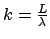
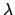
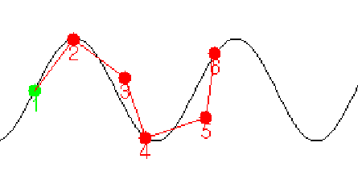

Definimos el parámetro k (número de ondas) como:

, siendo L la longitud del gusano y
la longitud de onda. Este parámetro nos da una idea del número de ondas completas que están recorriendo el gusano. Se han generado secuencias de movimiento correspondientes a K=1 y K=2.
|
 |
En la tabla ![[*]](crossref.png) se pueden ver los tiempos empleados
por el gusano en recorrer una distancia igual a su longitud, para
diferentes valores de la amplitud.
se pueden ver los tiempos empleados
por el gusano en recorrer una distancia igual a su longitud, para
diferentes valores de la amplitud.
| ||||||||||||||||||||||||||||||||||||||||||||||||||||||||||||||||||||||||||||||||||||||||||||||||||||||||||||||||||||||||||||||||
En general, cuanto mayor sea la amplitud de la onda, saltos mayores podrá sobrepasar el gusano.
Para k=2, el número de puntos de apoyo es mayor, lo que le
da al movimiento una mayor estabilidad, pero la amplitud máxima es
de 30 unidades. Con ella algunas articulaciones pasan por la posición
-90 ó 90, rango máximo de giro. Si se usa una amplitud mayor, las
articulaciones no pueden situarse sobre la función. En la figura ,
el gusano virtual no puede adaptarse a la onda porque las articulaciones
2 y 4 están en su límite físico. Fijándonos en los datos obtenidos,
cuanto mayor sea la amplitud, mayor es la velocidad de avance (menor
es el tiempo). La amplitud máxima es de 30, por lo que habrá un límite
en la altura del obstáculo que se puede superar.
|
 |
Para K=1, sólo hay dos puntos de apoyo por lo que será menos
estable y el consumo mayor, ya que hay mayor cantidad de rticulaciones
haciendo fuerza. Además habrá un momento en el que el gusano sólo
estará apoyado sobre la cola y la cabeza, , como se muestra en la
figura , donde el consumo será máximo. Dependiendo
de otros parámetros como la longitud total del gusano y la fuerza
de los servos, el arco será o no estable. Las amplitudes que se pueden
conseguir con k=1 son mayores, por lo que se pueden superar
obstáculos más altos.